유통관리사-3급 (2017-07-02 기출문제)
1과목: 유통상식
1. 유통의 기본 개념과 용어에 대한 설명으로 가장 옳지 않은 것은?
- 상권(trade area)은 한 점포가 고객을 유인할 수 있는 지역범위를 말한다.
- 로지스틱스(logistics)란 원재료의 조달에서 제품판매, 재활용에 이르는 전과정을 총괄적으로 경영하는 것을 말한다.
- 상품계획이란 고객의 수요를 예측하고, 고객에게 잘 팔릴 수 있는 상품을 선정하고, 그 상품을 확보, 관리하는 모든 활동을 말한다.
- 판매촉진이란 소비자로 하여금 제품을 구매하도록 유도하기 위한 추가적인 인센티브를 제공하는 활동을 말한다.
- 총마진수익율(GMROI)은 이익과 회전율을 동시에 감안하여 평균회전율을 총이익률로 나누어서 구한다.
(정답률: 66%)

2. POS 시스템에 대한 설명으로 가장 옳지 않은 것은?
- 'Point Of Sales'의 머리글자를 딴 것으로 판매시점 정보관리를 뜻한다.
- POS 터미널, 스토어 콘트롤러 및 본부의 주 컴퓨터로 구성된다.
- POS시스템을 통해 특정 소매점에서 수집된 자료는 전체시장을 대표한다.
- 점포 내에 진열되어 있는 상품의 판매 및 재고 현황을 파악하기가 용이하다.
- 시간대별로 상품의 매출현황을 파악하여 분석목적에 따라 가공하여 출력할 수 있다.
(정답률: 60%)
3. ( ) 안에 들어갈 용어를 순서대로 올바르게 나열한 것은?
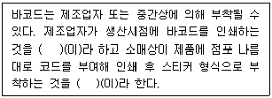
- 소스마킹, 인스토어마킹
- 스토어마킹, 소스마킹
- RFID, POS시스템
- POS시스템, RFID
- POS시스템, 스캐너데이터
(정답률: 67%)
4. 유통경로 갈등의 유형 중 수직적 갈등에 해당하는 것은?
- 생산자 ↔ 생산자
- 도매상 ↔ 도매상
- 소매상 ↔ 소매상
- 도매상 ↔ 소매상
- 소매상 ↔ 소비자
(정답률: 76%)
5. 소매상과 비교한 도매상의 특징으로 가장 옳지 않은 것은?
- 도매상은 최종소비자가 아니라 사업고객과 주로 거래한다.
- 도매상은 입지, 촉진, 점포분위기 등이 소매상에 비해 상대적으로 덜 중요하다.
- 도매상은 소매상과 달리 고객서비스를 대행하는 유통기능은 수행하지 않는다.
- 도매상은 상대적으로 더 넓은 상권을 대상으로 대규모 거래를 한다.
- 도매상은 소매상과 다른 법적 규제를 받는다.
(정답률: 64%)
6. 최근 소매업계에서 일어나고 있는 주요한 추세라고 보기 어려운 것은?
- 컴퓨터 및 모바일 기술의 영향력 증가
- 소매업의 양극화 현상 심화
- 중간상 촉진의 증가
- 대형마트나 편의점 등에서 유통업체 브랜드 확대
- 파워소매업자에 의한 소매시장 지배력 약화
(정답률: 50%)
7. 다음의 설명에 해당하는 도매상으로 가장 옳은 것은?
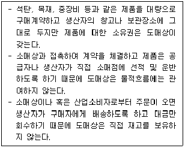
- 대리 도매상(agent wholesaler)
- 직송 도매상(drop shipper)
- 트럭 도매상(truck jobber)
- 완전서비스 도매상(full service wholesaler)
- 현금 무배달 도매상(cash and carry wholesaler)
(정답률: 56%)
8. '청소년 보호법'에서 금지하는 청소년 유해행위에 포함되지 않는 것은?
- 남녀 혼숙하게 하는 등 풍기를 문란하게 하는 영업행위, 이를 목적으로 장소를 제공하는 행위
- 영리를 목적으로 청소년으로 하여금 영업장으로 손님을 유인하는 행위
- 주로 차 종류를 조리·판매하는 업소에서 영업장을 벗어나 차 종류를 배달하는 행위를 하게 하거나 이를 조장하거나 묵인하는 행위
- 시간제 근무 형태로 고용된 청소년 근로자를 근무시간 외에 지속적으로 연장하여 근무시키는 행위
- 영리나 흥행을 목적으로 청소년의 장애나 기형 등의 모습을 일반인들에게 관람시키는 행위
(정답률: 46%)
9. 유통경로의 기능으로 가장 옳지 않은 것은?
- 경로통제의 효율성 제고
- 소비자와 제조업자의 연결
- 교환과정의 촉진
- 고객서비스 제공
- 제품구색 불일치의 완화
(정답률: 41%)
10. 소비자기본법에서 제시된 소비자의 8대 권리 중 다음의 사례에 해당하는 권리로서 가장 적절한 것은?
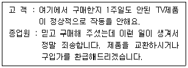
- 물품 등을 선택함에 있어서 필요한 지식 및 정보를 제공받을 권리
- 물품 등을 선택함에 있어서 거래상대방, 구입, 장소, 가격 및 거래조건 등을 자유로이 선택할 권리
- 소비자 스스로의 권익증진을 위해 단체를 조직하고 활동할 수 있는 권리
- 소비생활에 영향을 주는 정책과 사업자활동 등에 대하여 의견을 반영시킬 권리
- 피해에 대하여 신속ㆍ공정한 절차에 따라 적절한 보상을 받을 권리
(정답률: 91%)
11. 유통산업발전법에서 규정하는 유통관리사의 직무사항에 해당하지 않는 것은?
- 유통경영·관리 기법의 향상
- 유통경영·관리와 관련한 계획, 조사, 연구
- 유통경영·관리와 관련한 진단 및 평가
- 유통경영·관리와 관련한 상담 및 자문
- 유통경영·관리와 관련된 인력양성
(정답률: 55%)
12. 특정 지역 안에서 특약점이나 대리점을 두어 전매권을 부여하고 경쟁품의 취급을 금지하고자 할 때 사용하는 유통경로 형태로서, 고급자동차, 귀금속, 의류 등 고가품에 적용이 가능한 유통경로는?
- 전속적 유통경로
- 개방적 유통경로
- 복수 유통경로
- 주문제작 유통경로
- 선택적 유통경로
(정답률: 67%)
13. 업태와 특징의 짝으로 가장 옳은 것은?
- 파워센터 - 중소기업의 우량상품을 적극 발굴하여 TV로 판매
- 슈퍼마켓 - 소비자의 개성화, 고급화된 취향 충족
- 할인점 - 고회전, 저마진 상품을 주로 취급
- 홈쇼핑 - 박스단위의 디스플레이
- 드럭스토어 - 염가점들을 종합해 놓은 초대형 소매점
(정답률: 63%)
14. 판매원으로서 고객을 방문할 때의 예절로 옳지 않은 것은?
- 약속시간보다 여유를 두고 미리 도착하여 용모와 복장을 점검한다.
- 첫 방문 또는 초면일 경우에 명함을 주는 것은 실례이므로 가져가지 않는 것이 좋다.
- 사전에 알리지 않은 사람과 동행하는 것은 상대를 당황하게 할 수 있으므로 지양한다.
- 사무실 방문 시, 사무실에 들어가기 전에 코트와 장갑은 미리 벗는다.
- 상대방이 바쁜 시간을 피해 약속을 잡고 방문한다.
(정답률: 90%)
15. 완구나 스포츠용품처럼 특정품목군만을 집중적으로 취급하는 유통형태로 해당품목에 대한 상세한 정보와 함께 다양한 제품을 살펴보고 구매할 수 있는 장점을 갖고 있는 소매업태는?
- 대형할인점
- 종합쇼핑몰
- 홈쇼핑
- 카테고리킬러
- 백화점
(정답률: 85%)
16. 소매기업 업태분류에 대한 설명으로 가장 옳지 않은 것은?
- 공급자보다는 소비자를 중심으로 하여 분류된다.
- 상품을 만드는 방법에 따라 분류된다.
- 어떤 판매방법을 사용하는가에 따라 분류된다.
- 소비자의 구매편리성에 입각해 어떤 경영전략을 펴는가에 따라 분류된다.
- 동일한 상품을 취급하더라도 업태는 다양화 될 수 있다.
(정답률: 58%)
17. 프랜차이즈 시스템에서 가맹점 사업자(프랜차이지) 측면의 장점으로 옳지 않은 것은?
- 사업경험과 지식이 없더라도 창업이 용이하다.
- 가맹본부의 높은 인지도를 통해 소비자의 신뢰를 얻을 수 있다.
- 직접적으로 경영에 참여하지 않으므로 제품개발에 전념할 수 있다.
- 검증된 품질과 가격으로 원재료 및 부재료를 보다 안정적으로 공급받을 수 있다.
- 효율성이 입증된 제품을 이용하여 영업하기 때문에 자영업자보다 상대적으로 실패위험이 낮은 편이다.
(정답률: 80%)
18. 소매상 진화발전 이론 중 소매점의 진화과정을 주로 소매점에서 취급하는 상품 구색의 폭으로 설명한 이론은?
- 소매상 수레바퀴 이론(Wheel of retailing)
- 소매점 아코디언이론(Retail accordion theory)
- 변증법적 과정(Dialectic process)
- 소매상 수명주기이론 (Retail life cycle theory)
- 소매기관 적응행동 이론(Adaptive theory)
(정답률: 35%)
19. 직접유통에 대한 설명으로 옳지 않은 것은?
- 교통발달로 인해 유통경로가 단축되어 직접유통이 발달할 수 있게 되었다.
- 생산자가 직접 소비자에게 제품을 유통시키는 것을 말한다.
- 유통경로길이가 가장 짧은 형태로 강력한 경로통제가 가능한 경로이다.
- 생산자와 소비자 사이에 하나 이상의 유통기관을 거치는 형태를 말한다.
- 도매상이 부당한 이윤을 취하고 있다는 생산자의 불만도 직접유통이 생겨난 이유가 될 수 있다.
(정답률: 72%)
20. 유통업의 환경변화 중 사회, 경제적 요인에 해당하지 않는 것은?
- 싱글족의 증가
- 맞벌이 부부의 증가
- 평균 수명의 증가
- 소득수준의 증가
- 소비구조의 변화
(정답률: 63%)
2과목: 판매 및 고객관리
21. ( ) 안에 들어갈 용어로 옳은 것은?
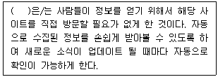
- SSR(Simple Syndication Reality)
- RSS(Really Simple Syndication)
- QR(Quick Response)
- SNS(Social Network System)
- VR(Virtual Reality)
(정답률: 32%)
22. 판매원으로서 전화를 걸거나 받을 때 주의해야 할 점으로 가장 옳은 것은?
- 통화상대가 누구인지 확인할 필요는 없다.
- 메모를 하면 쓰는 시간이 소요되므로 최대한 전달내용을 머릿속으로 기억하도록 한다.
- 통화 도중에 다른 사람과 상의할 일이 생기면 양해를 구하고 전화기를 그대로 들고 있는 상태에서 상의한다.
- 마무리 인사는 꼭 하고, 고객보다 나중에 끊는다.
- 자신의 소속과 성명을 밝힐 필요는 없다.
(정답률: 88%)
23. 소비자의 구매행동에 영향을 미치는 요인 중 사회적 요인은?
- 동기
- 학습
- 태도
- 가족
- 개성
(정답률: 40%)
24. 고객에 대한 내용으로 옳지 않은 것은?
- 고객충성도가 피상적이고 일시적인 태도라면 고객만족도는 오랜 기간의 구매 행동을 통해 축적된, 보다 강력하고 장기적인 개념이다.
- 기존 고객을 유지하는 것보다 신규 고객을 획득하는 것이 비용이 더 많이 들고 더 어렵다.
- 고객을 유지한 기간이 길수록 기업에 대한 고객의 충성도가 높은 경향이 있다.
- CRM에서는 신규고객 수를 늘리려는 노력보다는 기존고객을 유지하고 이탈고객을 최소화하고자 노력한다.
- 고객을 창출하는 과정에서 가장 힘들고 비용이 많이 드는 고객은 초기 구매자이다.
(정답률: 52%)
25. ( ) 안에 들어갈 용어를 순서대로 올바르게 나열한 것은?
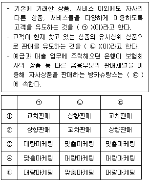
- ①
- ②
- ③
- ④
- ⑤
(정답률: 63%)
26. 슈퍼마켓 상품군별 배치의 방법으로 가장 옳지 않은 것은?
- 생식품은 소비빈도가 낮기 때문에 보조동선에 배치한다.
- 셀프매대는 구색을 강화하여 지속적인 판매에 중점을 두고 배치한다.
- 계산대 가까운 곳에는 깨지기 쉽고 무거운 것을 배치하여 쇼핑 후 마지막으로 쇼핑하도록 하게 한다.
- 냉동식품은 한 곳에 밀집하여 배치한다.
- 행사상품은 주동선에 인접하여 고객의 통행을 방해하지 않는 크기로 운영한다.
(정답률: 52%)
27. 가격형 판촉 유형은?
- 샘플과 무료 체험
- 사은품이나 경품
- 상환
- 고정 고객 우대 프로그램
- 콘테스트
(정답률: 65%)
28. 점포 레이아웃 유형 중 그리드(grid)형에 대해 기술한 것을 모두 고르면?
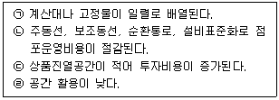
- ㉠, ㉣
- ㉠, ㉡
- ㉠, ㉢
- ㉠, ㉡, ㉢
- ㉠, ㉡, ㉣
(정답률: 35%)
29. 서비스 품질을 측정할 수 있는 방법 중 하나인 SERVQUAL의 핵심요소가 아닌 것은?
- 발전성(Advance)
- 신뢰성(Reliability)
- 공감성(Empathy)
- 반응성(Responsiveness)
- 유형성(Tangibles)
(정답률: 60%)
30. 고객을 가장 적절하게 응대한 경우는?
- 고객의 요구를 들어줄 수 없을 경우 미련을 갖지 않도록 하기 위해 무조건 안 된다고 단칼에 얘기한다.
- 고객을 이해시키기 위해 장황하게 설명한다.
- 고객의 요구를 파악하기 어려울 경우 똑같이 애매하게 대답한다.
- 설명할 내용이 많으면 급하게 처리하기 위해서 빠르게 설명한다.
- 자신의 업무와 관계가 없는 요구가 들어오더라도 확인 후 말씀드리겠다고 고객에게 응대하거나 업무담당자를 연결시켜준다.
(정답률: 85%)
31. 다음의 장·단점을 가지는 광고 매체로 옳은 것은?
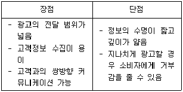
- TV
- 잡지
- 라디오
- 옥외 광고
- 인터넷 광고
(정답률: 52%)
32. 고객이 상품의 쇼핑과 구매를 통해 충족시킬 수 있는 심리적 욕구와 가장 거리가 먼 것은?
- 사회적 경험
- 지위와 영향력
- 모험
- 자기 보상
- 의식주 해결
(정답률: 45%)
33. 다음의 설명에 해당하는 포장의 기능은?
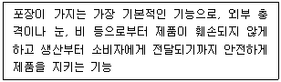
- 상품성
- 보호성
- 편리성
- 심리성
- 배송성
(정답률: 80%)
34. 다음의 설명에 해당하는 상품 디스플레이의 기본 진열방법은?
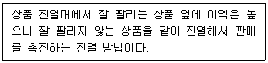
- 수직 진열
- 수평 진열
- 샌드위치 진열
- 라이트업 진열
- 전진 입체 진열
(정답률: 71%)
35. 아래에서 설명하고 있는 STP 전략의 단계는?
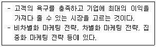
- 시장 세분화
- 포지셔닝
- 표적 시장의 선정
- 경쟁 시장 분석
- 제품 특화 개발 단계
(정답률: 54%)
36. 다음은 고객의 구매 심리 단계를 나타낸 것이다. ( ㉠ ), ( ㉡ ) 안에 들어갈 단계를 순서대로 올바르게 나열한 것은?
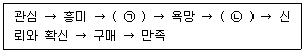
- ㉠ 연상, ㉡ 비교와 검토
- ㉠ 흥미의 구체화, ㉡ 집착
- ㉠ 비교와 검토, ㉡ 연상
- ㉠ 연상, ㉡ 집착
- ㉠ 비교와 검토, ㉡ 조사
(정답률: 74%)
37. 고객과 대화를 하는 기본예절로 가장 옳지 않은 것은?
- 표준어를 사용한다.
- 발음에 유의하며 전문용어, 외국어를 남발하지 않는다.
- 명령형보다 의뢰형을 사용한다.
- 유행어, 비속어를 사용하여 부드러운 상황을 연출하도록 한다.
- 부정형, 단정형의 말로 끝내기보다 문제 상황에 대한 대안을 제시한다.
(정답률: 85%)
38. 다음 글상자에서 설명하는 마케팅관리철학(혹은 개념)은?
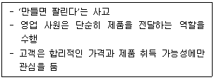
- 고객 지향적 개념
- 매매 지향적 개념
- 판매 지향적 개념
- 서비스 지향적 개념
- 생산 지향적 개념
(정답률: 31%)
39. 편의품과 관련 있는 설명으로 옳은 것을 모두 나열한 것은?
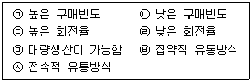
- ㉠, ㉢, ㉥
- ㉡, ㉣, ㉤, ㉥
- ㉠, ㉢, ㉦
- ㉡, ㉣, ㉥
- ㉠, ㉢, ㉤, ㉥
(정답률: 67%)
40. 각종 식품을 다루는 방법으로 가장 옳지 않은 것은?
- 냉동식품은 식품공전에 따르면 보존온도를 –10도 이하로 유지해야 한다.
- 가공식품의 경우 유효기간을 항상 확인해야 한다.
- 냉동식품이라고 하더라도 식품별로 구역을 나누어서 정리한다.
- 유제품과 같이 유통기간이 짧은 제품은 남은 유통기간 정도에 따라 가격할인을 실시하기도 한다.
- 신선식품의 경우 자체 행사를 통해서 당일 판매를 유도하기도 한다.
(정답률: 50%)
41. 고객이 최근에, 얼마나 자주, 얼마나 많은 금액을 구매했는지를 검토해서 고객의 생애가치를 분석하는 기법은?
- SCM기법
- 다빈도 구매자 프로그램
- 이중부호화기법
- RFM분석
- 장바구니분석
(정답률: 33%)
42. 체계적인 고객 관리에 대한 설명으로 가장 옳은 것은?
- 고객의 불만들은 접수될 때만 즉시 해결하면 된다.
- 고객과의 의사소통보다는 제품 개발에 더 투자를 해도 된다.
- 한 명의 고객을 잃어도 다른 고객들이 더 많으므로 기업 경영에는 아무 문제가 없다.
- 고객의 불평을 통해 소중한 정보나 아이디어를 얻는 것은 불가능하다.
- 적극적인 고객관리를 통해 부정적인 구전효과를 방지한다.
(정답률: 74%)
43. ( ) 안에 들어갈 알맞은 단어는 무엇인가?
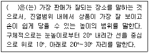
- POP(Point Of Purchase)
- POS(Point Of Sales)
- 골든 라인(Golden line)
- 판매제시
- 디스플레이(Display)
(정답률: 77%)
44. 고객관계관리(Customer Relationship Management : CRM)의 특성 및 설명으로 옳지 않은 것은?
- CRM은 시장 점유율보다 고객 점유율을 더 중요시한다.
- CRM은 고객의 획득보다는 고객의 유지에 중점을 둔다.
- CRM은 단순한 제품 판매보다는 고객 관계에 중점을 두고 있다.
- CRM은 고객과의 관계를 통해 고객의 욕구를 파악하여 상품을 만들고, 적시에 공급하여 기업의 높은 경영 성과를 거두려는 전략이다.
- CRM은 데이터를 심층적으로 분석하고 가치화하는 작업을 대부분 외부 전문가 집단에 위임하고 있어 기업은 고객에 관한 데이터베이스를 구축할 필요가 없다.
(정답률: 84%)
45. 시각적 머천다이징(VMD)에 대한 내용으로 옳지 않은 것은?
- Visual Merchandising의 약자로, 시각적으로 소비자의 구매를 유도해 판매에 이르게 하는 전략을 뜻한다.
- VMD의 기대효과는 들어가고 싶은 매장, 고르기 쉬운 매장, 사고 싶은 상품이 많은 매장, 판매와 관리가 편한 매장을 형성할 수 있다는 것이다.
- VMD를 활용하여 쇼윈도위와 스테이지 등에 전시된 상품을 일정기간 단위로 교체하면, 고객이 혼란을 느낄 수 있으므로 가급적 변화를 지양하여야 한다.
- 마네킹, 바디 등 다양한 종류의 보조물을 목적에 따라 적절하게 사용해야 한다.
- 매장에 진열되어 있는 상품을 돋보이게 하기 위해 조명을 이용하여 매장의 분위기를 연출한다.
(정답률: 76%)